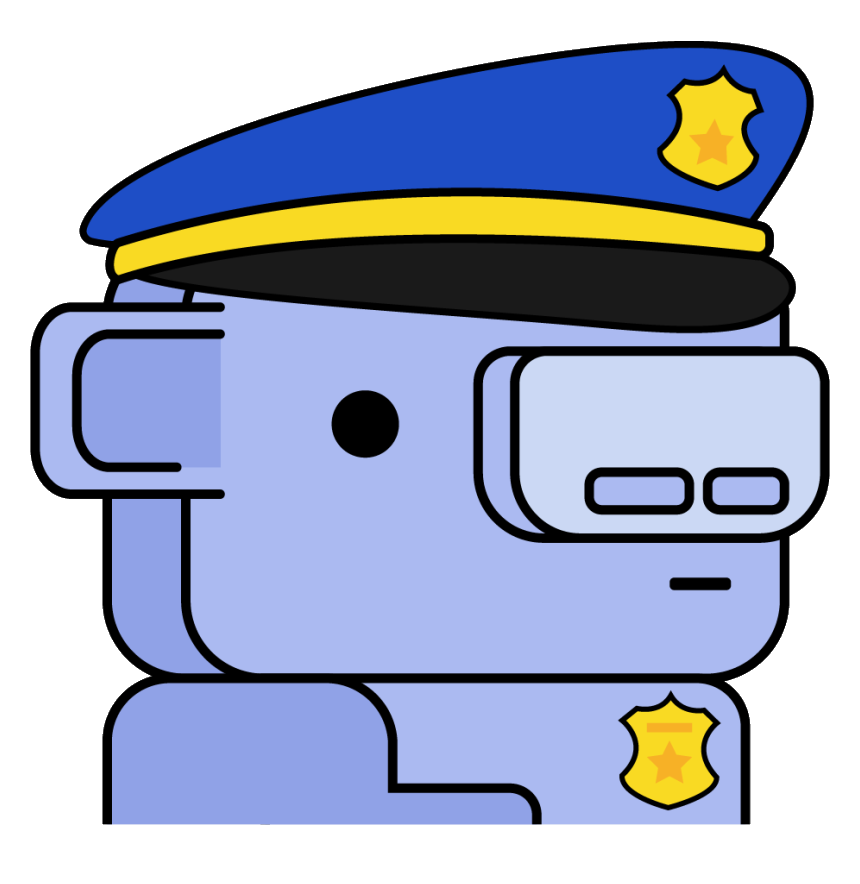

Entwickelt von Hammer and Chisel Mehr als 250 Mio registrierte Benutzer. Stoppten Entwicklung für ihr Handy Spiel. Finanziert von Benchmark Capital und Tencent. Ziel war Kommunikationfähigkeit und geringe Latenz Features anderer Software wie Skype und TeamSpeak wurden kombiniert und verbessert Bekannt durch Gamer und E-Sport Scene Steigerte 2016 ihr Kapital um 20 Millionen USD
